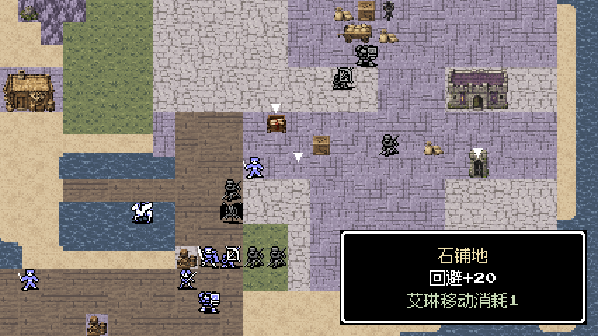

加减号显示已修复 · 0.2.2
原来的问号是缺少加号字形造成的回退显示。正确文案为“回避+20”，表示石铺地提供20点物理回避。现已复用完整像素字形，保持原字距。
加减号专项13项、独立包8项检查通过；现有58张运行截图已刷新，文字安全区错误0。

原来的问号是缺少加号字形造成的回退显示。正确文案为“回避+20”，表示石铺地提供20点物理回避。现已复用完整像素字形，保持原字距。
加减号专项13项、独立包8项检查通过；现有58张运行截图已刷新，文字安全区错误0。
